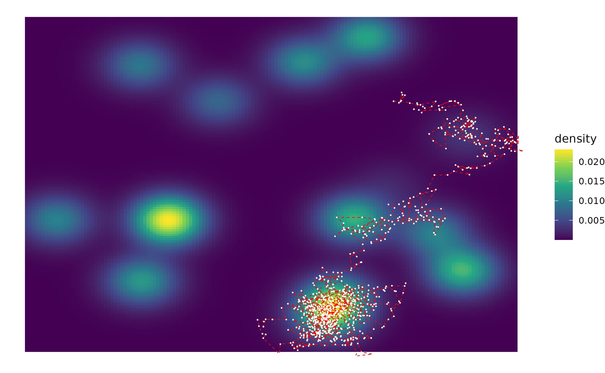
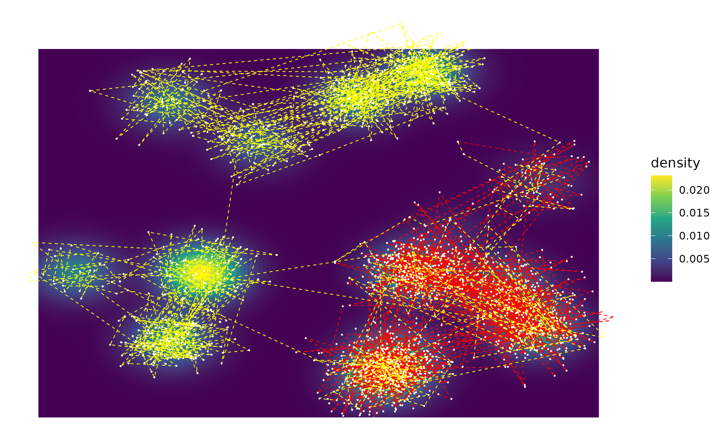

multivariate-mixtures.RmdThis vignette aims to show how different sampling algorithms may navigate a ‘patchy’ environment. Let’s start by creating such an environment.
First, we create a matrix with what will be the means of 15 different Gaussians
set.seed(1)
# Create a matrix with the means of 15 different Gaussians
names <- rep("mvnorm", 15)
parameters <- list()
for (i in 1:15){
parameters[[i]] <- list(runif(2) * 18 - 9, diag(2))
}We’ll also require a set of weights (which in this case will all be random). If using equal weights, you will not need to include the weights as a function parameter.
We can use the getDensityGrid() function to quickly get a dataframe with the density of each point in our space, for easy plotting.
hill_map <- plot_2d_density(start = c(-10,-10), size = 20, cellsPerRow = 150, names, parameters, weights)
print(hill_map)An MH sampler may not be able to explore the whole of the space, as it is unable to make long jumps
iterations = 2**10
MH <- sampler_mh(start = c(5,5), distr_name = names, distr_params = parameters,
sigma_prop = diag(2) / 8, iterations = iterations, weights = weights)
MH_df <- data.frame(x = MH[[1]][,1], y = MH[[1]][,2])
hill_map +
geom_path(MH_df, mapping = aes(x,y), colour = "red", linetype = "dashed", size = .3) +
geom_point(MH_df, mapping = aes(x,y), colour = "white",size =.1)
#> Warning: Using `size` aesthetic for lines was deprecated in ggplot2 3.4.0.
#> ℹ Please use `linewidth` instead.
An MC3 sampler, on the other hand, runs hotter chains under the hood with which it switches stochastically, which allows it to visit far-off regions and thus explore the whole hypothesis space
MC3 <- sampler_mc3(start = c(5,5), distr_name = names, distr_params = parameters, sigma_prop = diag(2) / 8,
swap_all = FALSE, iterations = iterations, weights = weights)
MC3_df <- data.frame(x = MC3[[1]][,1,1], y = MC3[[1]][,2,1])
hill_map +
geom_path(MC3_df, mapping = aes(x,y), colour = "red", linetype = "dashed", size = .3) +
geom_point(MC3_df, mapping = aes(x,y), colour = "white",size =.1)HMC needs tuning of the epsilon and L parameters for optimal performance. Compare the performance of HMC in this space depending on the size of epsilon and L (small = red, large = yellow)
# epsilon = .5, L = 10
HMC_.5 <- sampler_hmc(start = c(5,5), distr_name = names, distr_params = parameters, iterations = iterations, weights = weights)
HMC_.5_df <- data.frame(x = HMC_.5[[1]][,1], y = HMC_.5[[1]][,2])
# epsilon = 1, L = 50
HMC_1 <- sampler_hmc(start = c(5,5), distr_name = names, distr_params = parameters, L = 50, iterations = iterations, weights = weights, epsilon = 1)
HMC_1_df <- data.frame(x = HMC_1[[1]][,1], y = HMC_1[[1]][,2])
hill_map +
geom_path(HMC_.5_df, mapping = aes(x,y), colour = "red", linetype = "dashed", size = .3) +
geom_point(HMC_.5_df, mapping = aes(x,y), colour = "white",size =.1) +
geom_path(HMC_1_df, mapping = aes(x,y), colour = "yellow", linetype = "dashed", size = .3) +
geom_point(HMC_1_df, mapping = aes(x,y), colour = "white",size =.1) The optimal sizes of epsilon and L depend on the space to be sampled: if the space is smaller than the current one (we do have 15 multivariate normal distributions!), large values will be inefficient as the sampler will turn on itself. Too small values, on the other hand, require many iterations to sample the whole space.